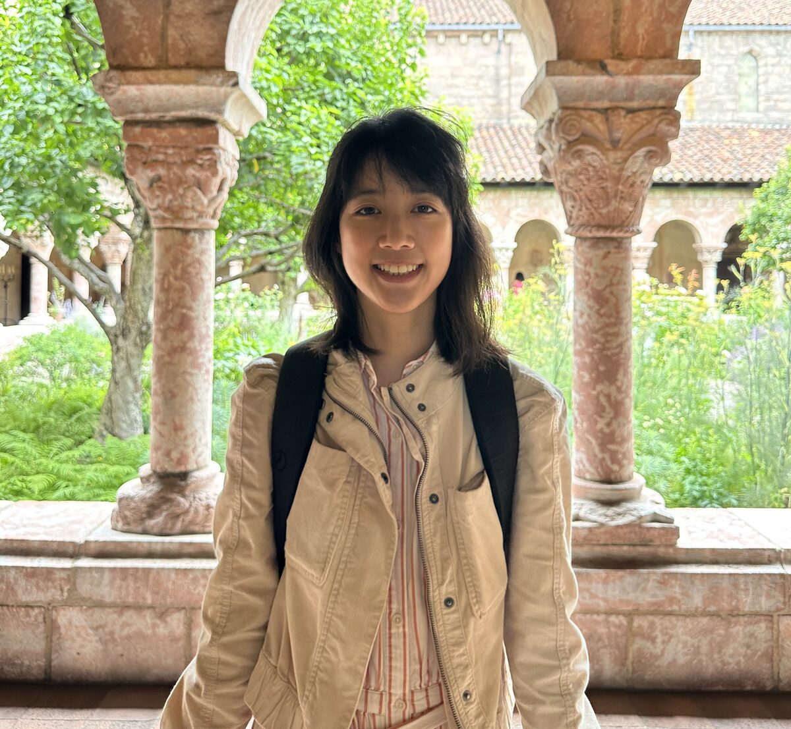
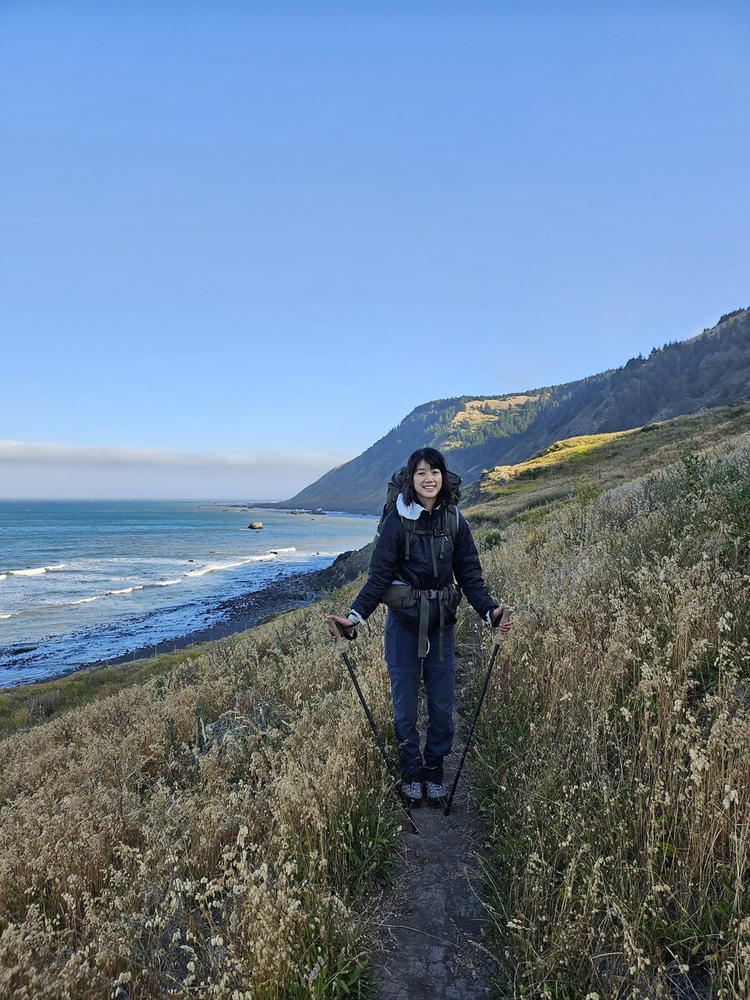
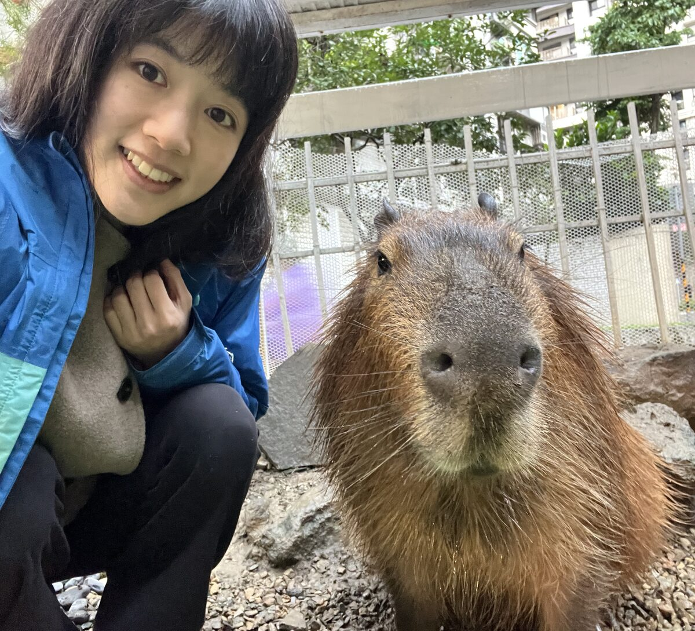

Scientist, she/her
I am a computational biologist with expertise in genomic, epigenetic, and transcriptomic data analysis with a primary focus in cancer research. I am thankful to have had brilliant mentors over the years who approach cancer research with much rigor and passion; as such, one of many learnings I have emulated is the care and integrity in the work that I do. I strive to remain cognizant of the patients whose data that I work with -- patients who I will never know but can only begin to recognize the challenges, sacrifices, and strength they all possess. Ultimately, I hope to contribute to research that can improve patient lives in this collective fight against cancer.
For my Ph.D., I built a tool to analyze long read third-generation sequencing data, which enabled us to delve into the perturbed mRNA splicing landscape in CLL patients, characterize full-length native RNA transcripts, and identify RNA editing haplotypes associated with LUADs.
Currently, I am a computational biologist at Freenome, where I have helped drive projects for tumor-naive monitoring of residual disease in CRC patients and build multiomic/multinomial machine learning models for subtype classification in IMpower133 SCLC patients and IMvigor130 UC patients.
I spend my free time reading (favorites include The Overstory, Pachinko, and When Breath Becomes Air), knitting, crocheting, climbing (mostly indoor bouldering), and volunteering.

›Freenome
Freenome has developed blood tests for noninvasive profiling of patient tumor/immune biology and drug response; if you have an interest in Freenome's technologies and access to patient samples for those who could benefit, please message me on LinkedIn.
›University of California, Santa Cruz
My advisor was Dr. Angela Brooks.
›University of California, Berkeley
Concentration in Genetics, Genomics, and Development. I also took courses foundational for bioinformatics, such as relevant statistics/ bioengineering courses as well as all the lower division CS courses required for the CS major.
This site last updated May 2026.
